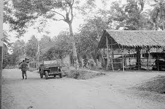

Sejarah Kota Depok, Pernah Menjadi Negara dan Memiliki Presiden!
Depok merupakan wilayah setingkat kotamadya di provinsi Jawa Barat. Sebelum terbentuk tanggal 27 April 1999, kota ini merupakan kecamatan di Kabupaten Bogor. Siapa sangka, dahulunya Depok Pernah menjadi sebuah negara tersendiri yang dipimpin oleh presiden sebagai kepala negara sekaligus pemerintahan.
Sebelum menjadi kota administratif, Kota Depok mulanya merupakan kota kecil. Melansir dari portal resmi Pemerintah Kota Depok, daerah pertama Depok yakni merupakan sebuah Kecamatan yang berada di lingkungan Kawedanan (Pembantu Bupati) wilayah Parung Kabupaten Bogor.
